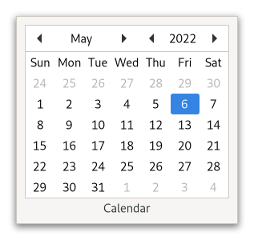

Gtk.Calendar¶
Example¶
- Subclasses
None
Methods¶
- Inherited
Gtk.Widget (181), GObject.Object (37), Gtk.Accessible (15), Gtk.Buildable (1)
- Structs
class |
|
|
|
|
|
|
|
|
|
|
|
|
|
|
|
|
|
|
Virtual Methods¶
Properties¶
- Inherited
Name |
Type |
Flags |
Short Description |
|---|---|---|---|
r/w/en |
|||
r/w/en |
|||
r/w/en |
|||
r/w/en |
|||
r/w/en |
|||
r/w/en |
Signals¶
- Inherited
Name |
Short Description |
|---|---|
Emitted when the user selects a day. |
|
Emitted when the user switched to the next month. |
|
Emitted when user switched to the next year. |
|
Emitted when the user switched to the previous month. |
|
Emitted when user switched to the previous year. |
Fields¶
- Inherited
Class Details¶
- class Gtk.Calendar(**kwargs)¶
- Bases
- Abstract
No
GtkCalendaris a widget that displays a Gregorian calendar, one month at a time.An example
Gtk.CalendarA
GtkCalendarcan be created with [ctor`Gtk`.Calendar.new].The date that is currently displayed can be altered with [method`Gtk`.Calendar.select_day].
To place a visual marker on a particular day, use [method`Gtk`.Calendar.mark_day] and to remove the marker, [method`Gtk`.Calendar.unmark_day]. Alternative, all marks can be cleared with [method`Gtk`.Calendar.clear_marks].
The selected date can be retrieved from a
GtkCalendarusing [method`Gtk`.Calendar.get_date].Users should be aware that, although the Gregorian calendar is the legal calendar in most countries, it was adopted progressively between 1582 and 1929. Display before these dates is likely to be historically incorrect.
- CSS nodes
`` calendar.view ├── header │ ├── button │ ├── stack.month │ ├── button │ ├── button │ ├── label.year │ ╰── button ╰── grid
╰── label[.day-name][.week-number][.day-number][.other-month][.today]
GtkCalendarhas a main node with name calendar. It contains a subnode called header containing the widgets for switching between years and months.The grid subnode contains all day labels, including week numbers on the left (marked with the .week-number css class) and day names on top (marked with the .day-name css class).
Day labels that belong to the previous or next month get the .other-month style class. The label of the current day get the .today style class.
Marked day labels get the
:selectedstate assigned.- classmethod new()[source]¶
- Returns
a newly
GtkCalendarwidget- Return type
Creates a new calendar, with the current date being selected.
- get_date()[source]¶
- Returns
the
GDaterepresenting the shown date- Return type
Returns a
GDateTimerepresenting the shown year, month and the selected day.The returned date is in the local time zone.
- get_day_is_marked(day)[source]¶
- Parameters
day (
int) – the day number between 1 and 31.- Returns
whether the day is marked.
- Return type
Returns if the day of the self is already marked.
- get_show_day_names()[source]¶
- Returns
Whether the calendar shows day names.
- Return type
Returns whether self is currently showing the names of the week days.
This is the value of the [property`Gtk`.Calendar:show-day-names] property.
- get_show_heading()[source]¶
- Returns
Whether the calendar is showing a heading.
- Return type
Returns whether self is currently showing the heading.
This is the value of the [property`Gtk`.Calendar:show-heading] property.
- get_show_week_numbers()[source]¶
- Returns
Whether the calendar is showing week numbers.
- Return type
Returns whether self is showing week numbers right now.
This is the value of the [property`Gtk`.Calendar:show-week-numbers] property.
- mark_day(day)[source]¶
- Parameters
day (
int) – the day number to mark between 1 and 31.
Places a visual marker on a particular day of the current month.
- select_day(date)[source]¶
- Parameters
date (
GLib.DateTime) – aGDateTimerepresenting the day to select
Switches to date's year and month and select its day.
- set_show_day_names(value)[source]¶
- Parameters
value (
bool) – Whether to show day names above the day numbers
Sets whether the calendar shows day names.
- set_show_heading(value)[source]¶
- Parameters
value (
bool) – Whether to show the heading in the calendar
Sets whether the calendar should show a heading.
The heading contains the current year and month as well as buttons for changing both.
Signal Details¶
- Gtk.Calendar.signals.day_selected(calendar)¶
- Signal Name
day-selected- Flags
- Parameters
calendar (
Gtk.Calendar) – The object which received the signal
Emitted when the user selects a day.
- Gtk.Calendar.signals.next_month(calendar)¶
- Signal Name
next-month- Flags
- Parameters
calendar (
Gtk.Calendar) – The object which received the signal
Emitted when the user switched to the next month.
- Gtk.Calendar.signals.next_year(calendar)¶
- Signal Name
next-year- Flags
- Parameters
calendar (
Gtk.Calendar) – The object which received the signal
Emitted when user switched to the next year.
- Gtk.Calendar.signals.prev_month(calendar)¶
- Signal Name
prev-month- Flags
- Parameters
calendar (
Gtk.Calendar) – The object which received the signal
Emitted when the user switched to the previous month.
- Gtk.Calendar.signals.prev_year(calendar)¶
- Signal Name
prev-year- Flags
- Parameters
calendar (
Gtk.Calendar) – The object which received the signal
Emitted when user switched to the previous year.
Property Details¶
- Gtk.Calendar.props.day¶
- Name
day- Type
- Default Value
1- Flags
The selected day (as a number between 1 and 31).
- Gtk.Calendar.props.month¶
- Name
month- Type
- Default Value
0- Flags
The selected month (as a number between 0 and 11).
This property gets initially set to the current month.
- Gtk.Calendar.props.show_day_names¶
- Name
show-day-names- Type
- Default Value
- Flags
Determines whether day names are displayed.
- Gtk.Calendar.props.show_heading¶
- Name
show-heading- Type
- Default Value
- Flags
Determines whether a heading is displayed.
- Gtk.Calendar.props.show_week_numbers¶
- Name
show-week-numbers- Type
- Default Value
- Flags
Determines whether week numbers are displayed.
- Gtk.Calendar.props.year¶
- Name
year- Type
- Default Value
1- Flags
The selected year.
This property gets initially set to the current year.